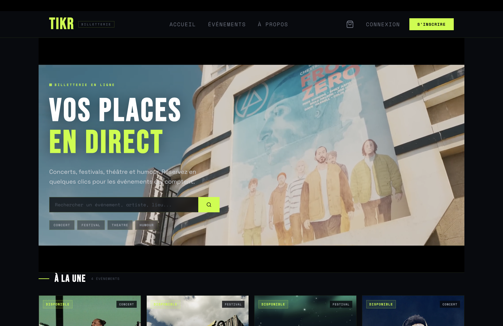

Concerts · Festivals · Théâtre · Humour
TIKR est une plateforme de billetterie en ligne développée from scratch en PHP natif et MySQL. Elle permet à des utilisateurs de réserver des billets pour des événements culturels (concerts, festivals, spectacles) et offre aux administrateurs un back-office complet avec gestion de jauges en temps réel, tableau de bord analytique et CRUD avancé.
Cadre : Projet B2 Développement Web — projet individuel
Durée : 35 heures · Année : 2025 — 2026
Rôle : Conception, développement, design, déploiement

Défi : Lors de réservations simultanées sur le dernier billet, la jauge pouvait passer en négatif.
Solution : Mise en place d'une transaction SQL avec SELECT FOR UPDATE pour poser un verrou pessimiste sur la ligne. Le second utilisateur attend la fin de la transaction du premier.
Défi : Lors du déploiement sur Hostinger : les AUTO_INCREMENT des colonnes id avaient été supprimés lors de l'import SQL, et le mode strict MySQL (ONLY_FULL_GROUP_BY) refusait certaines requêtes.
Solution : Diagnostic via phpMyAdmin et logs Apache, puis correction par ALTER TABLE et réécriture des requêtes.
Implémentation des protections OWASP : requêtes préparées contre l'injection SQL, hash bcrypt pour les mots de passe, htmlspecialchars contre XSS, tokens CSRF sur tous les POST, sessions HttpOnly + SameSite avec regenerate_id, blocage Apache des fichiers sensibles.
Backend · Modélisation de données · Sécurité web · Transactions SQL · UI/UX · Déploiement · Debugging production · Versioning Git
Inspirée de l'esthétique brutaliste du jeu Marathon (Bungie) : interface sombre, accents fluo (vert acide et cyan), typographies Bebas Neue et Space Mono. Une identité forte qui différencie TIKR des plateformes classiques.